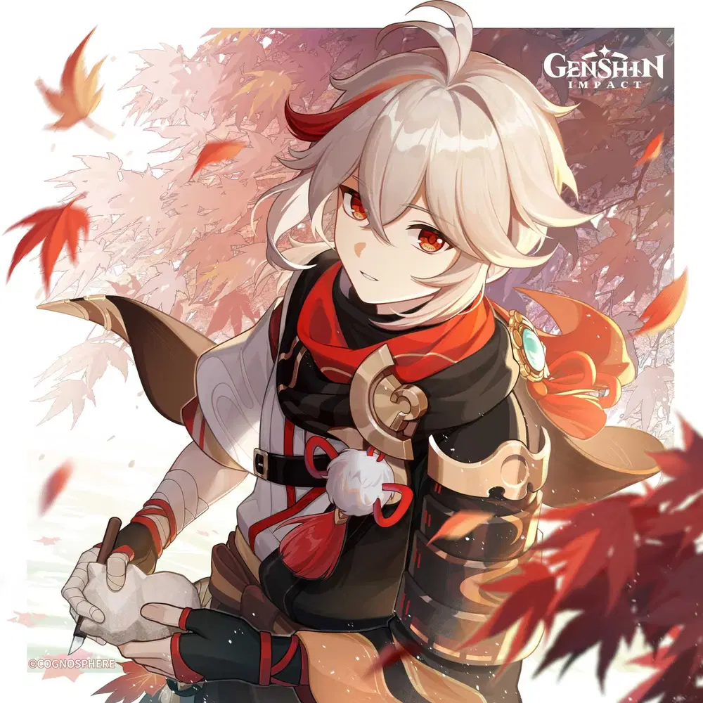
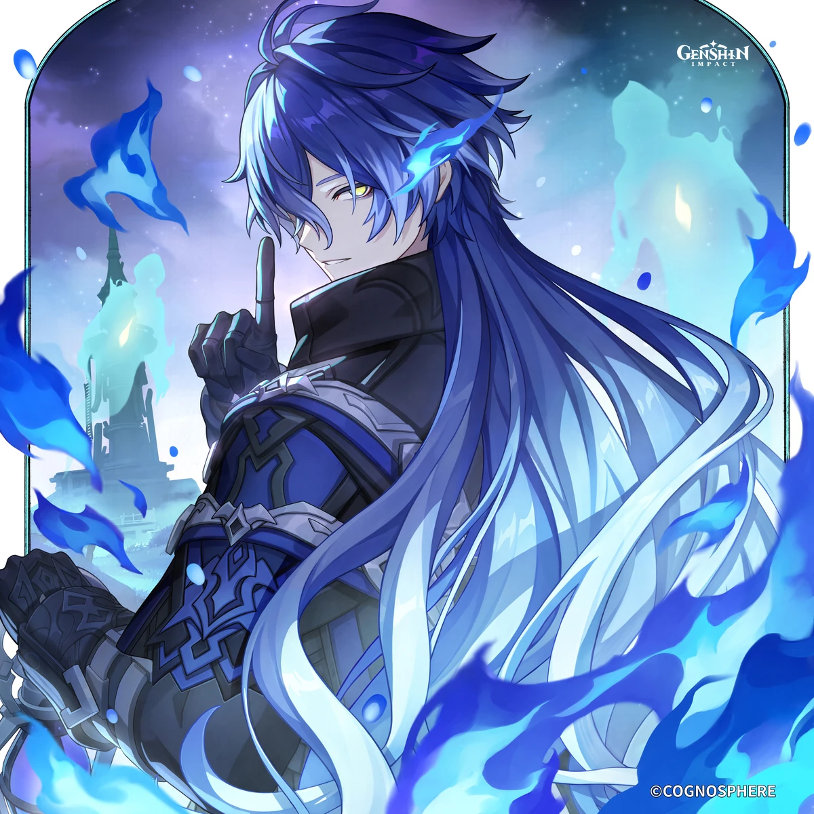
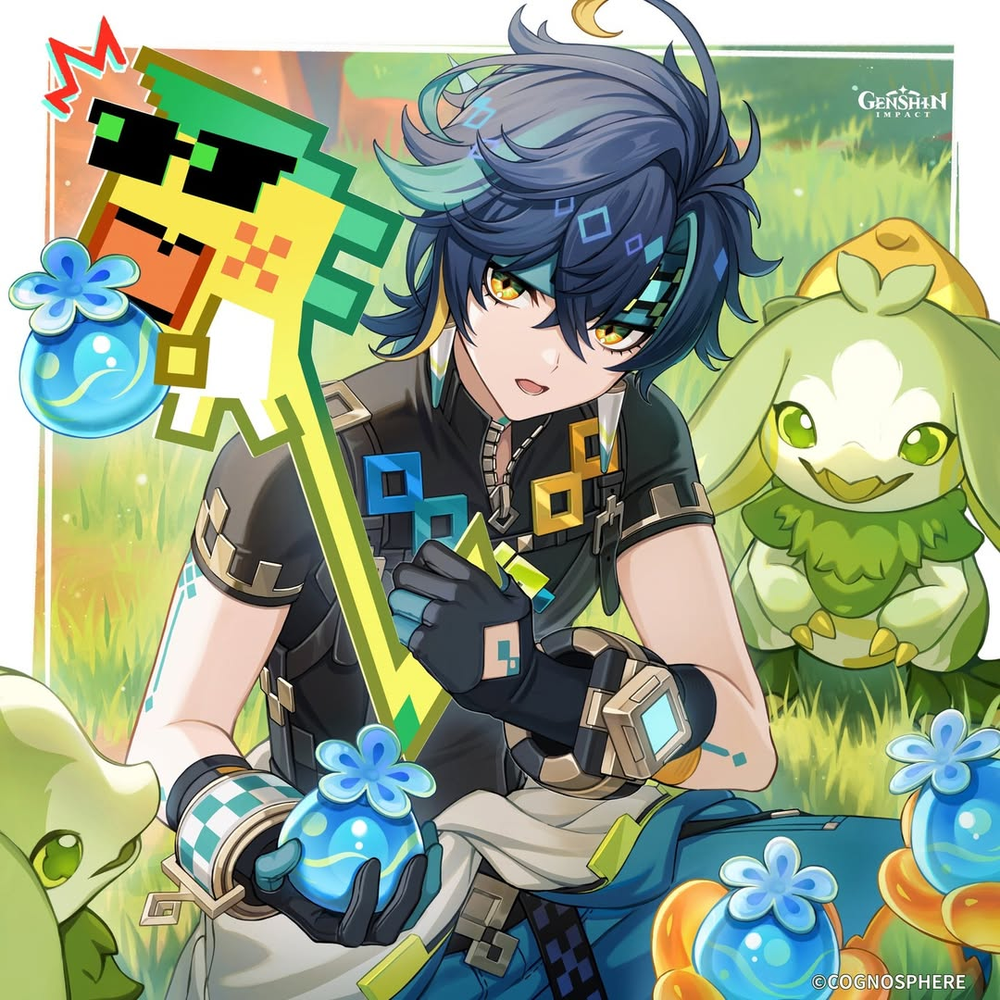
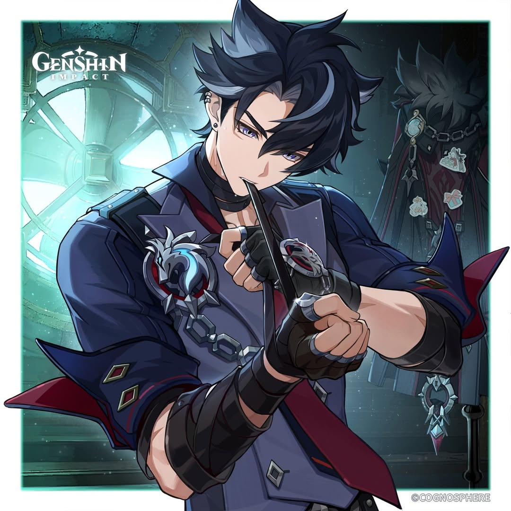
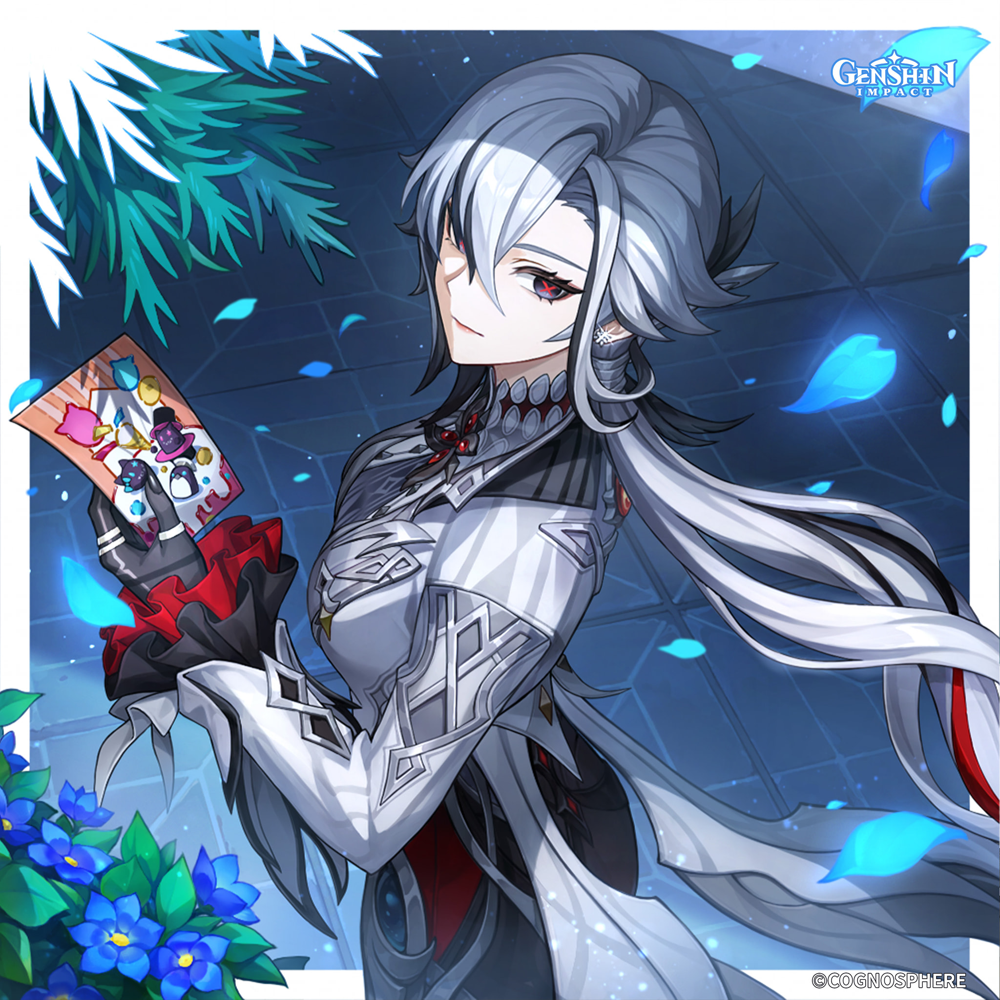
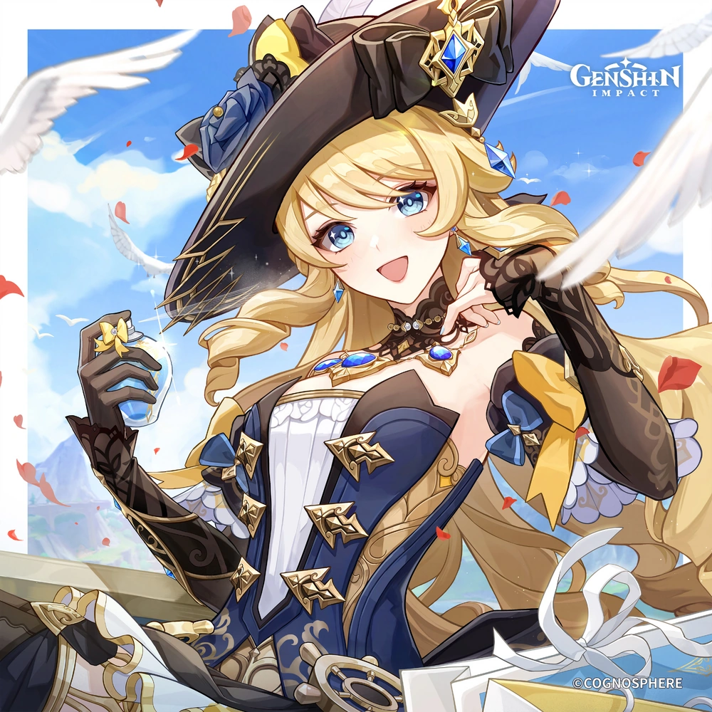
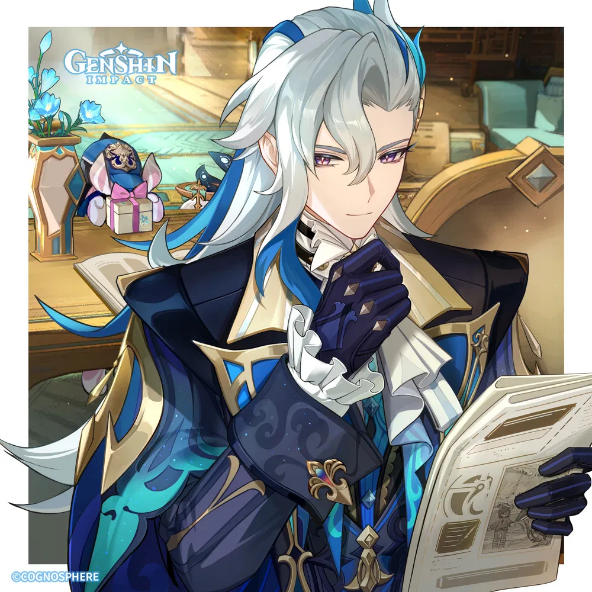

PERSONAJES

KAEDEHARA KAZUHA
Nación: Inazuma
Visión: Anemo
Un samurái errante de Inazuma con alma poética. Aunque su pasado está marcado por pérdidas, Kazuha mantiene una calma serena y una profunda conexión con la naturaleza. Su forma de pelear es tan elegante como sus versos.

FLINS
Nación: Nodkrai
Visión: Electro
Kyryll Chudomiróvich Flins, soldado ratnik. Su personalidad es seria, enfocada y cada movimiento que hace está calculado con precisión militar. Controla el poder Electro con una eficiencia impresionante, canalizando descargas exactas y rápidas que reflejan su carácter frío, directo y confiado. Aunque no es muy expresivo, demuestra su lealtad y compromiso a través de sus acciones.

KINICH
Nación: Natlan
Visión: Dendro
Un cazasaurios que viaja junto al autoproclamado "Señor de los Dragones", suele aceptar encargos poco populares y es experto en medir el precio de las cosas.Su espíritu ardiente refleja la cultura de su nación, donde la lucha, el honor y la fuerza interior son fundamentales.

WRIOTHESLEY
Nación: Fontaine
Visión: Cryo
El alcalde del Fuerte Merópide, condecorado con el titulo de "Duque", el titulo honorifico más alto que se le puede conceder a un ciudadano de Fontaine. Suele mantener un perfil bajo y es una persona serena y en la que se puede confiar.

ARLECCHINO
Nación: Fontaine
Visión: Pyro
La Sota, la cuarta de Los Once de los Fatui, conocida como "Padre" por los niños de la Casa de la Hoguera. Una estratega peligrosa, calculadora y carismática. Su poder y liderazgo la convierten en una de las figuras más temidas de los Fatui.

NAVIA
Nación: Fontaine
Visión: Geo
La siempre radiante presidenta de Spina di Rosula, combina calidez con un impresionante talento para el combate. Dedicada a ayudar a los habitantes de Fontaine a resolver todo tipo de asuntos peligrosos.

NEUVILLETTE
Nación: Fontaine
Visión: Hydro
El juez supremo de Fontaine. Es una persona poco accesible, tal vez por su personalidad, o tal vez porque guarda un origen ancestral que lo conecta profundamente con el agua.